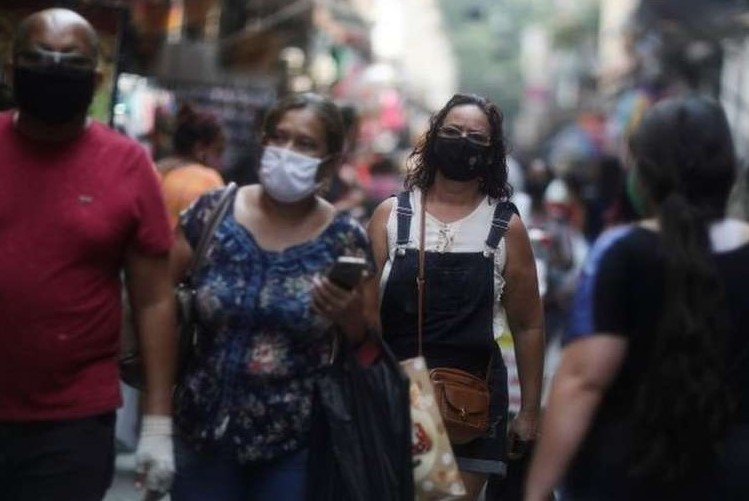

Portal de notícias da ETEC Juscelino Kubitschek - Desenvolvimento de Sistemas (Noite), Atividade PRW, Prof: Paulo Sergio. - Wallace Saymon Leite Pessoa, Turma B.
Brasil já está na 2ª onda de covid-19', diz pesquisador da USP.
O alerta vem do pesquisador Domingos Alves, responsável pelo Laboratório de Inteligência em Saúde (LIS) da Faculdade de Medicina da Universidade de São Paulo (USP), em Ribeirão Preto.
Alves vem acompanhando há oito meses os dados da pandemia brasileira como um dos responsáveis pelo portal Covid-19 Brasil, que reúne dezenas de especialistas de diferentes áreas em torno da produção de estatísticas e análises da propagação do novo coronavírus no país.
Sua avaliação de que o Brasil está vivendo, assim como os Estados Unidos e a Europa, uma nova onda de contágios se baseia na evolução da taxa de reprodução (Rt) do coronavírus no país, que indica que a pandemia voltou a crescer por aqui.
Essa taxa é calculada com base no aumento de novos casos e permite saber quantas pessoas são contaminadas por alguém que já está infectado.

Se o índice fica acima de 1, isso indica que a pandemia está se expandindo. Quando está abaixo, é um sinal de que a pandemia está perdendo intensidade.
No caso do Brasil, a taxa era de 1,12 em 16 de novembro, de acordo com o Observatório de Síndromes Respiratórias da Universidade Federal da Paraíba.
Isso significa que 100 pessoas irão infectar outras 112, que, por sua vez, irão infectar outras 125. Assim, a epidemia brasileira cresce exponencialmente.
Na mesma data, a Rt estava acima de 1 em 20 Estados (Acre, Alagoas, Amapá, Bahia, Ceará, Espírito Santo, Goiás, Maranhão, Mato Grosso, Minas Gerais, Paraíba, Paraná, Pernambuco, Rio de Janeiro, Rio Grande do Sul, Rondônia, Santa Catarina, São Paulo, Sergipe e Tocantins) e no Distrito Federal.
A situação estava mais crítica no Paraná, onde a taxa era de 1,62. Já em Santa Catarina a Rt está acima de 1 há mais tempo: desde 14 de outubro.
Fonte: https://www.terra.com.br/noticias/coronavirus/coronavirus-brasil-ja-esta-na-2-onda-de-covid-19-diz-pesquisador-da-usp,f88de93753a800cec73af94f271a06f9izy35qmn.html